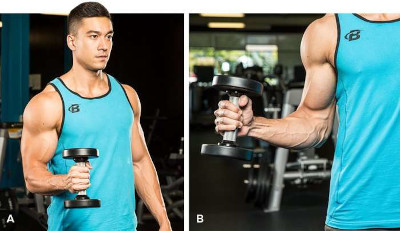
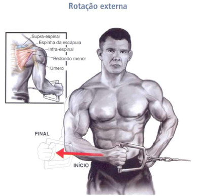

Você começa o seus treinos aquecendo?
Um bom treino sempre começa com um bom aquecimento, e no caso do peito, sempre comece aquecendo o manguito rotador, que é um grande axuliador no treino, e muito facil de lesionar, porém muitas pessoas fazem com o halter, como na imagem abaixo.
E está errado, pois a força da gravidade joga o peso para baixo e fazendo isso você não direciona o peso na articulação desejada, ou seja, você acaba perdendo seu tempo e não aquecendo nada... veja a seguir a forma correta de aquecer o manguito rotador.
Agora sim, Vamos começar!
Nesse treino vamos começar pela parte que temos mais dificuldade de desenvolver, que é a parte de cima do peito, o peitoral clavicular, você pode optar por fazer com halter ou na barra, duas boas escolhas para se começar.
Supino Inclinado
comece com:
- 2 series de 15 com 40% da sua carga.
- 3 series de 8 a 12 com sua carga máxima.
Supino Reto
O supino reto vai trabalhar o peitoral como um todo, porém vai dar mais ênfase na parte média.
- 4 séries de 8 a 12.
Supino Declinado Cross Over
O supino declinado vai dar mais ênfase na parte baixa do seu peitoral.
- 4 séries de 8 a 12.
Crucifixo Deitado com halter
E por último e não menos importante o crucifixo, que vai trabalhar bem o miolo do peito, e vai trazer aquela fadiga geral no músculo.
- 4 séries de 8 a 12.

aqui está uma ótima opção de treino para você que é iniciante, espero ter ajudado, volte sempre.